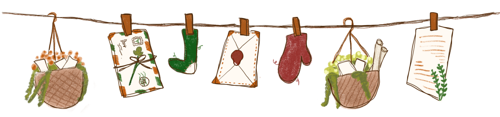
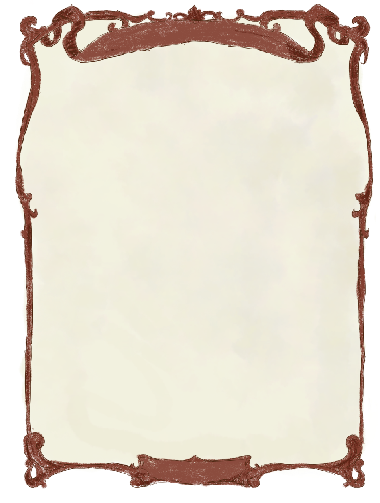
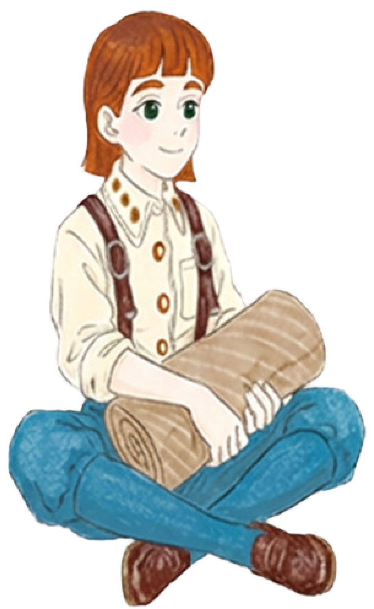
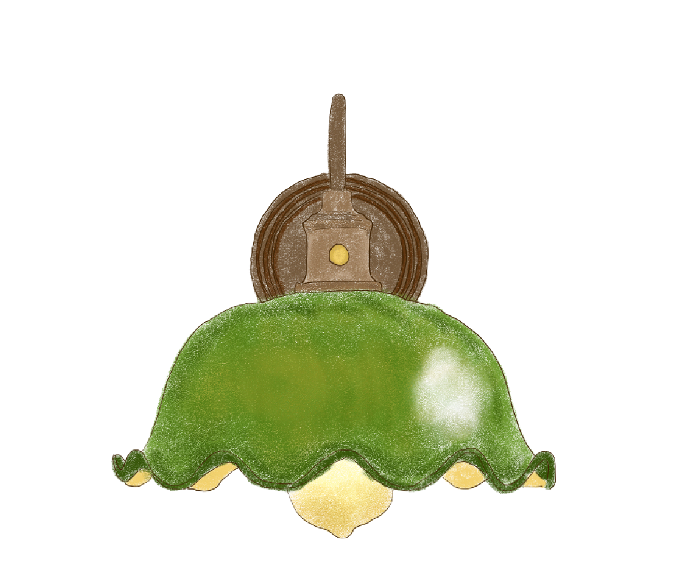

代筆者
Profile

Profile



私は、想いを綴るデザインの代筆者です。 お客様の心の奥にある、まだ言葉にならない気持ちを受け取り、一通の手紙のように、静かに綴っていきます。 お客様は差出人であり、依頼人。 その先には、明確な受取人と目的があります。 その想いがまっすぐ届くように、色や言葉、余白に意味を込め、形にします。目指すゴールに寄り添いながら、成果へとつながるデザインを、一緒に探していきます。

Webデザインおよびグラフィックデザインを通して、
お客様の目的や課題に寄り添った制作を行います。
Webデザインでは、バナー、SNS投稿画像、 コーポレートサイト、LP、ポートフォリオサイトなど、 伝えたい情報が分かりやすく届く構成と視覚表現を意識したデザインを制作いたします。 グラフィックデザインでは、名刺、ショップカード、フライヤーなど、 用途や媒体に応じた最適な表現をご提案いたします。 また、HTML・CSS・JavaScript（基礎）を用いた Webサイトのコーディングによる制作にも対応しております。 デザイン意図を踏まえた、シンプルで扱いやすい実装を心がけています。